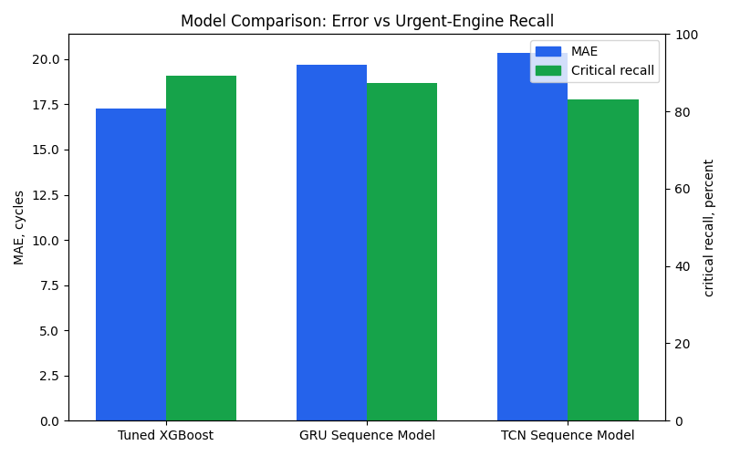
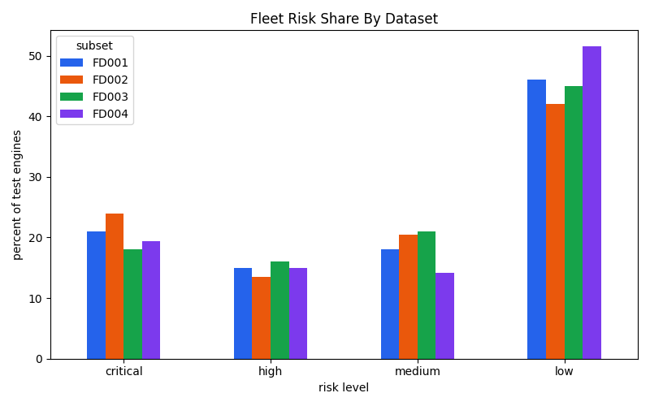
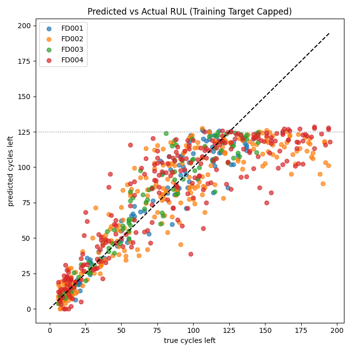
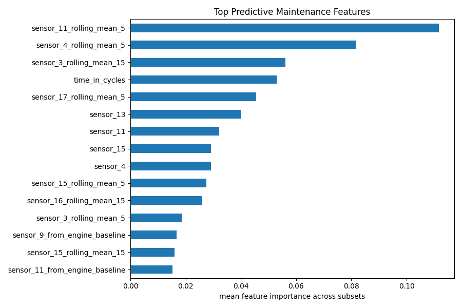
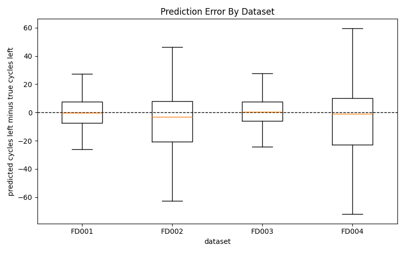

What This Dashboard Shows
Each engine has sensor readings over time. The model uses those readings to estimate Remaining Useful Life, or RUL: roughly how many operating cycles the engine has left. Lower predicted RUL means higher maintenance priority.
The model estimates cycles left before failure for every test engine.
Predictions are grouped into critical, high, medium, and low risk bands.
The highest-risk engines are listed first so maintenance teams know where to start.
FD001-FD004 cover different operating conditions and fault modes.
Typical prediction miss, measured in engine cycles. Lower is better.
Exact match between predicted and true risk bands.
Share of truly urgent engines caught by the critical-risk rule.
Engine Lookup
Search an engine ID to inspect its prediction, risk level, and recent sensor history. Example: FD002-124.
The line chart shows the selected sensor across the engine's observed test cycles. It is not the prediction by itself; it is context for the model's RUL estimate.
Highest Priority Engines
Read this table first. These engines have the lowest predicted life remaining and should be checked before the rest of the fleet. Risk match compares the predicted risk bucket with the bucket implied by the true RUL.
| Engine ID | Current Cycle | Predicted Cycles Left | True Cycles Left | Risk | Risk Match | Action |
|---|---|---|---|---|---|---|
| FD002-124 | 149 | 0.0 | 7 | critical | yes | urgent maintenance |
| FD004-101 | 166 | 0.0 | 13 | critical | yes | urgent maintenance |
| FD004-174 | 135 | 0.0 | 10 | critical | yes | urgent maintenance |
| FD004-22 | 158 | 0.0 | 11 | critical | yes | urgent maintenance |
| FD002-90 | 163 | 0.4 | 8 | critical | yes | urgent maintenance |
| FD002-134 | 186 | 1.4 | 9 | critical | yes | urgent maintenance |
| FD004-71 | 292 | 1.7 | 15 | critical | yes | urgent maintenance |
| FD004-173 | 151 | 3.4 | 8 | critical | yes | urgent maintenance |
| FD002-177 | 191 | 3.7 | 6 | critical | yes | urgent maintenance |
| FD002-9 | 161 | 3.9 | 11 | critical | yes | urgent maintenance |
| FD003-82 | 194 | 4.0 | 6 | critical | yes | urgent maintenance |
| FD004-159 | 160 | 4.9 | 22 | critical | yes | urgent maintenance |
| FD002-210 | 182 | 5.1 | 8 | critical | yes | urgent maintenance |
| FD002-138 | 200 | 5.3 | 7 | critical | yes | urgent maintenance |
Dataset Performance
Each dataset is a different test scenario. FD002 changes operating conditions, FD003 changes fault modes, and FD004 combines both.
How to read this: Risk bucket match is strict because the model must land in the same risk band as the true RUL. Critical recall is the safety metric: it asks whether truly urgent engines were caught.
| Dataset | Train Engines | Test Engines | MAE | RMSE | Risk Match | Crit. Recall | Crit. Misses | Pred. Critical |
|---|---|---|---|---|---|---|---|---|
| FD001 | 100 | 100 | 9.89 | 12.94 | 79.0% | 84.0% | 4 | 21 |
| FD002 | 260 | 259 | 19.34 | 27.62 | 78.8% | 96.7% | 2 | 62 |
| FD003 | 100 | 100 | 10.18 | 13.79 | 81.0% | 90.0% | 2 | 18 |
| FD004 | 249 | 248 | 20.95 | 28.62 | 73.0% | 83.0% | 9 | 48 |
Model Comparison
This compares the selected XGBoost model against real GRU and TCN sequence models. The sequence models read the last 30 cycles and are trained with sliding windows every 10 cycles, so they learn from many in-service points per engine instead of only the final state. All models are evaluated on the same test engines and maintenance metrics.

| Model | Dataset | Test Engines | MAE | RMSE | Risk Match | Crit. Recall | Crit. Misses |
|---|---|---|---|---|---|---|---|
| Tuned XGBoost | Overall | 707 | 17.27 | 23.94 | 77.1% | 89.2% | 17 |
| GRU Sequence Model | Overall | 707 | 19.71 | 27.49 | 73.3% | 87.2% | 20 |
| TCN Sequence Model | Overall | 707 | 20.37 | 27.65 | 72.1% | 83.1% | 27 |
| Tuned XGBoost | FD001 | 100 | 9.89 | 12.94 | 79.0% | 84.0% | 4 |
| Tuned XGBoost | FD002 | 259 | 19.34 | 27.62 | 78.8% | 96.7% | 2 |
| Tuned XGBoost | FD003 | 100 | 10.18 | 13.79 | 81.0% | 90.0% | 2 |
| Tuned XGBoost | FD004 | 248 | 20.95 | 28.62 | 73.0% | 83.0% | 9 |
| GRU Sequence Model | FD001 | 100 | 13.99 | 19.32 | 70.0% | 80.0% | 5 |
| GRU Sequence Model | FD002 | 259 | 20.26 | 30.17 | 77.2% | 96.7% | 2 |
| GRU Sequence Model | FD003 | 100 | 12.58 | 17.19 | 74.0% | 85.0% | 3 |
| GRU Sequence Model | FD004 | 248 | 24.31 | 32.15 | 70.2% | 81.1% | 10 |
| TCN Sequence Model | FD001 | 100 | 14.87 | 19.26 | 66.0% | 64.0% | 9 |
| TCN Sequence Model | FD002 | 259 | 20.80 | 30.17 | 76.4% | 93.4% | 4 |
| TCN Sequence Model | FD003 | 100 | 13.93 | 18.74 | 74.0% | 85.0% | 3 |
| TCN Sequence Model | FD004 | 248 | 24.73 | 32.00 | 69.4% | 79.2% | 11 |
Interpretation: lower MAE is better, but for maintenance the critical recall and critical misses columns matter most. A model that looks slightly better on average can still be worse if it misses more urgent engines.
Fleet Risk Summary
This chart shows the percentage of test engines in each risk band for each dataset, so datasets with different fleet sizes are easier to compare.

Total engines by action level: Critical 149 | High 103 | Medium 127 | Low 328. Truly critical engines missed by the critical-risk rule: 17.
0-30 predicted cycles left. Act first.
31-60 cycles left. Schedule maintenance.
61-90 cycles left. Inspect soon.
91+ cycles left. Continue monitoring.
Predicted vs Actual RUL
Dots close to the dashed diagonal line are accurate predictions. The model was trained with RUL capped at 125 cycles, so high-life engines naturally flatten near that level. For maintenance, the risk bucket is often more important than the exact cycle count.

Most Important Features
These are the sensor-derived signals the model used most. They help explain what the model paid attention to.

Prediction Error By Dataset
Values near zero mean the model was close. Positive values mean the model predicted too many cycles left; negative values mean it was conservative.

Source And Method
Source: NASA C-MAPSS FD001-FD004 train, test, and true-RUL files in data/raw/. Grain: one prediction per test engine at its latest observed cycle. Model: separate tuned XGBoost regressor per dataset, trained on capped RUL at 125 cycles. Validation: training engines are split by engine ID, then evaluated using simulated in-service snapshots. Maintenance metrics prioritize critical recall because a missed urgent engine is worse than a conservative early warning.